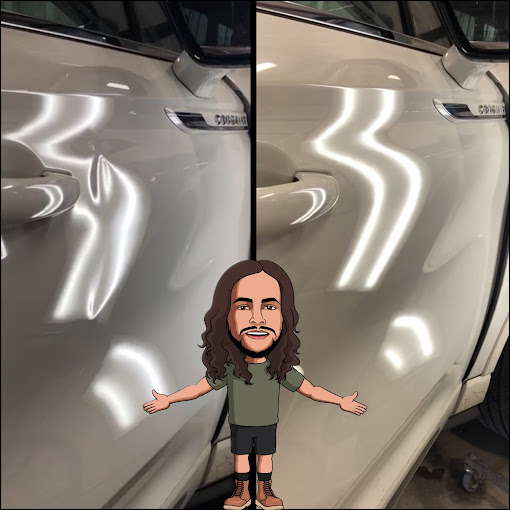
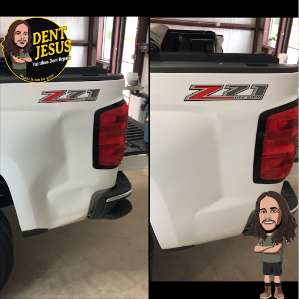

“Gray went above and beyond to help me have a great experience; not only in his work, but also with our insurance and rental issues. The repair work is impeccable! I highly recommend Dent Jesus!”
Dent Jesus • Oklahoma City, OK
Paintless Dent Repair in Oklahoma City, OK
Dent removal without the paint shop price.
Oklahoma born and raised, Dent Jesus is your local partner for paintless dent repair and hail damage restoration in and around Oklahoma City.
Real customers trust Dent Jesus with their hail damage and dents - here’s what they’re saying on Google.
“Highly recommend Dent Jesus and Gray! Customer service and communication was wonderful. He got my car looking like new again after some hail damage. Give him a call!”
“We took two cars in after extensive hail damage and both came back looking brand new. Gray kept us informed, worked seamlessly with our insurance, and finished when he said he would. The whole experience was smooth and stress free.”
“After a big hail storm I was skeptical, but the 5 star reviews were spot on. Gray walked us through every step, handled the details, and both of our cars look like they just rolled out of the showroom.”
How It Works
Most repairs start with clear photos of your dents. We evaluate the damage, access it from behind the panel, and gently massage the metal back into place without touching your factory paint. If you want a deeper dive into the process, we recommend reading a neutral overview from an independent consumer publication.
Your Local Dent Shop
Dent Jesus is a locally owned shop serving drivers across the Oklahoma City metro with straightforward advice on what your car really needs. For general guidance on dealing with hail claims, many drivers also find insurance claim checklists helpful before they call.
Book Your Free Estimate
Share a few photos and basic details and we’ll give you a straightforward estimate before any work begins—no surprise add-ons.
Schedule Online
Use our simple online contact form to request a time that works for you, or call to talk through your options.
Service Areas
Oklahoma City
Edmond
Yukon
Moore
Why Choose Dent Jesus?
When hail hits or a parking lot door ding shows up, you need a local expert who treats your car like their own and keeps the process simple.
Oklahoma Born and Raised
We’re a truly local Oklahoma City business that understands our weather, our roads, and our people.
Quality Work, Honest Business
You get clear communication, fair recommendations, and repairs done right the first time.
Protects Your Factory Paint
Paintless dent repair keeps your original finish intact so your vehicle keeps its value and looks factory-fresh.
No Job Too Big
From single dents and door dings to full-body hail damage, Dent Jesus can handle it.
OKC's Go-To Shop for Dent Repair
What We Fix
From single door dings to full-body hail storms, Dent Jesus handles the most common damage Oklahoma drivers see all year.
Hail Damage Repair
We specialize in hail-damaged roofs, hoods, and trunks, restoring your vehicle without lengthy body shop downtime.
Door Dings & Minor Dents
Parking lot dings and small dents are corrected quickly so your daily driver or weekend car looks clean again.
Bumper Dents
Many plastic and metal bumper dents can be repaired with PDR, saving you from a full replacement.
Fleet & Wholesale Dent Repair
Dealerships and fleet managers trust Dent Jesus to keep inventory looking sharp and ready to sell.
Get a Quote
Tell us what happened, upload photos, and we’ll provide a fast, honest estimate for your dent repair.
See the Results
Every repair is a before-and-after moment. These real jobs show how paintless dent repair can bring a “totaled” look back to like-new.




Let’s get the ball rolling!
Schedule with us today, and get your car the treatment it deserves. A few photos and a quick call are usually all it takes to get started.
Request a Free Dent Repair Estimate
Tell us a little about your vehicle and the damage, and we’ll follow up with a clear, honest estimate.